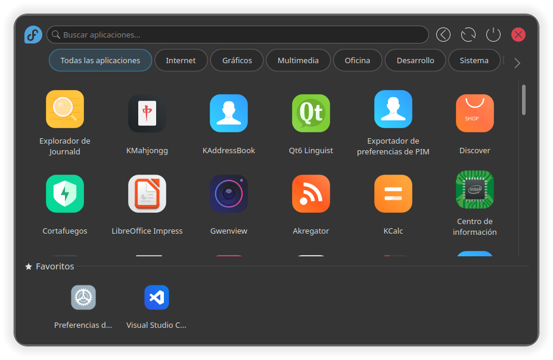
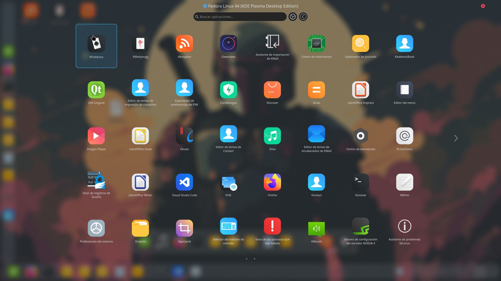
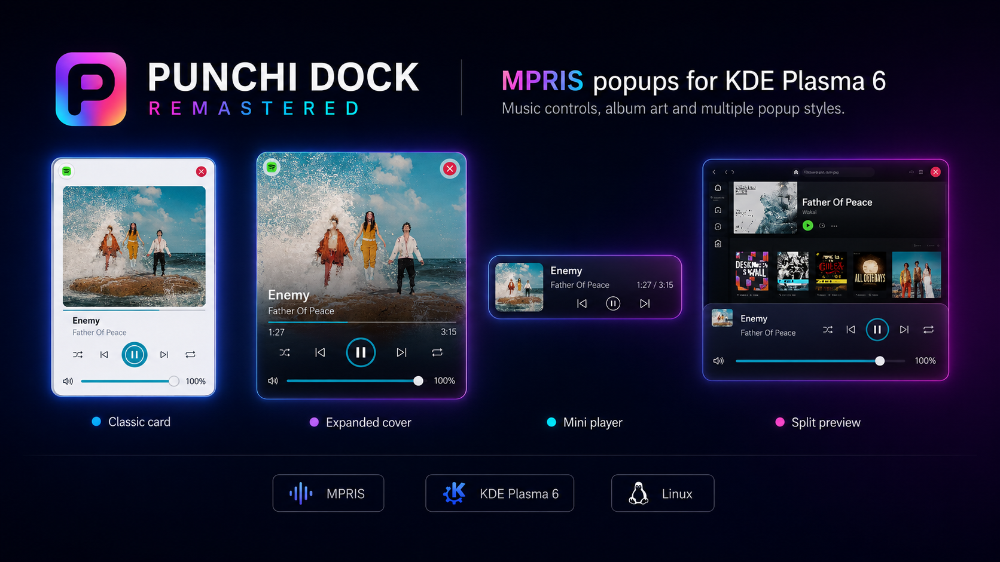
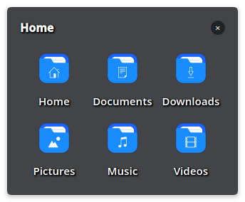
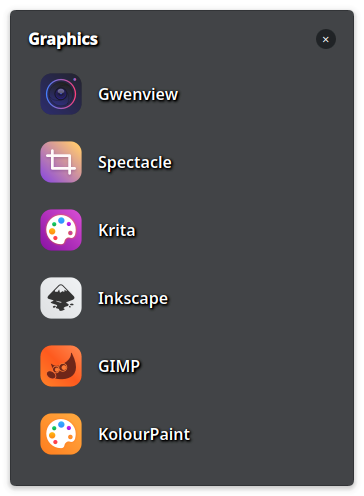
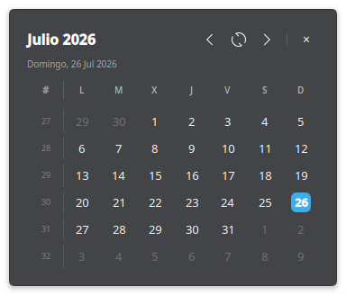
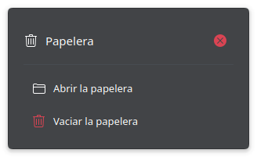

Punchi Dock Remastered es una reescritura modular y nativa del popular plasmoide Punchi Dock. Se ha rediseñado desde cero en C++20 y Qt 6 para integrarse sin costuras en entornos modernos basados en KDE Plasma 6 y Wayland, preparando el camino hacia la versión estable 1.0 con capacidades avanzadas de lanzador, gestión de tareas, popups multimedia y compatibilidad multi-distribución.
Arquitectura Nativa y Limpia
El proyecto combina la agilidad de los componentes declarativos de Qt Quick con la potencia de un módulo nativo en C++20 (Qt 6 y KDE Frameworks 6). Esto permite una gestión inmediata de los procesos del sistema, integración profunda con TaskManager de Plasma y análisis de espectro de audio mediante PipeWire sin sobrecargar el hilo del compositor KWin.
Pilares de la Edición Remastered
Capacidades Principales
Punchi Dock Remastered es una suite completa de control e interacción para tu panel de escritorio.
Novedades de la Serie 0.9.7
La serie 0.9.7 introduce saltos significativos en cinemática, personalización, estabilidad y compatibilidad multiplataforma:
Cinemática Suave en PunchiMenu (Spring Reveal)
Apertura elástica de superficie (escala dinámica 0.88 ──► 1.00), desplazamiento vertical anclado y desvanecimiento suave de salida (Fade Out) en el lanzador de aplicaciones.
Soporte Multi-Distribución con Paquete Universal
Incorporación del asistente universal de instalación y compilación en Debian 13 con proxies binarios de compatibilidad C (compat/), permitiendo que el paquete oficial se instale directamente en Fedora, Arch Linux, Debian y Kubuntu 26.04+.
Separadores Personalizados por Elemento
Posibilidad de definir la apariencia, grosor, longitud y opacidad de cada separador de forma individual o heredar el tema activo del dock sin bloqueos de interacción.
Desplazamiento Preciso y Gestión KWin
El scroll de aplicaciones en PunchiMenu se acopla al controlador de Kirigami respetando ruedas de alta resolución y paneles táctiles. Modo Pantalla Completa gestionado por flags nativos de KWin para un comportamiento óptimo de foco en Wayland.
Reordenamiento y Control de Tareas Dinámicas
Acción contextual para mover la sección completa de aplicaciones abiertas con flechas de teclado o puntero, y mecanismo de watchdog que cancela arrastres huérfanos.
Galería de Capturas
Explora la interfaz de Punchi Dock Remastered en sus diferentes modos de visualización y configuración:

Búsqueda en tiempo real, navegación por categorías del sistema, grilla de aplicaciones y barra de favoritos anclados.

Experiencia inmersiva a pantalla completa con carrusel de aplicaciones y accesos rápidos a sesiones de usuario.

Múltiples formatos de tarjeta multimedia con carátula del álbum, barra de reproducción y botón accesible para silenciar.
Comportamiento adaptable en disposición flotante inferior, panel vertical lateral y dentro de la barra oficial de Plasma 6.

Acceso rápido a archivos y carpetas con iconos de gran tamaño y nombres claros.

Visualización vertical compacta para navegación ágil entre múltiples documentos.

Widget emergente de calendario mensual con resaltado de fecha y reloj integrado.

Vaciado seguro asíncrono con sonido temático y confirmación integrada.
Guía de Instalación
Puedes instalar Punchi Dock Remastered mediante el paquete precompilado universal oficial o compilarlo localmente en tu distribución.
1. Instalación mediante Asistente Universal (Recomendado)
Descarga la última versión desde la KDE Store o las Releases de GitHub y utiliza el asistente universal sin necesidad de instalar compiladores:
./scripts-user/setup-universal.sh ruta/al/punchi-dock-remastered-0.9.7-universal.plasmoid2. Instalación Manual con kpackagetool6
Instalar por primera vez:
kpackagetool6 --type Plasma/Applet --install ./punchi-dock-remastered-0.9.7-fedora44-x86_64.plasmoidActualizar una instalación existente:
kpackagetool6 --type Plasma/Applet --upgrade ./punchi-dock-remastered-0.9.7-fedora44-x86_64.plasmoidRecuerda reiniciar Plasma Shell tras la instalación: systemctl --user restart plasma-plasmashell.service.
Compilar desde el Código Fuente
Si deseas compilar localmente el módulo C++ nativo para tu entorno, clona el repositorio y ejecuta los asistentes incluidos:
1. Comprobar dependencias del sistema:
./scripts-user/check-build-environment.sh2. Compilar y empaquetar el plasmoide:
./scripts-user/empaquetar-plasmoid.shMatriz de Compatibilidad
| Distribución | Estado de Soporte | Notas del Entorno |
|---|---|---|
| Fedora 44+ (Plasma 6) | Soporte Oficial Principal | Objetivo principal de distribución y testing de QA nativo del proyecto. |
| Arch Linux / Manjaro | Soporte Oficial Validado | Perfil estricto de desarrollo probado con Qt 6.7/6.8+ y Plasma 6. |
| Debian 13 (Trixie) / 14 (Forky) | Soporte Oficial Universal | Base de compilación universal con proxies binarios C (compat/). |
| Kubuntu 26.04+ (Plasma 6) | Soporte Oficial Validado | Compatible con el paquete universal o mediante compilación local asistida. |